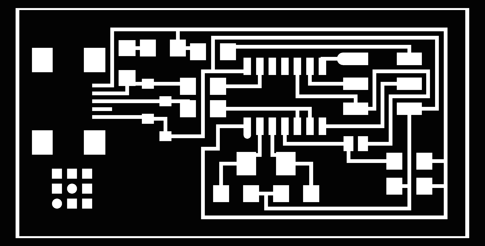
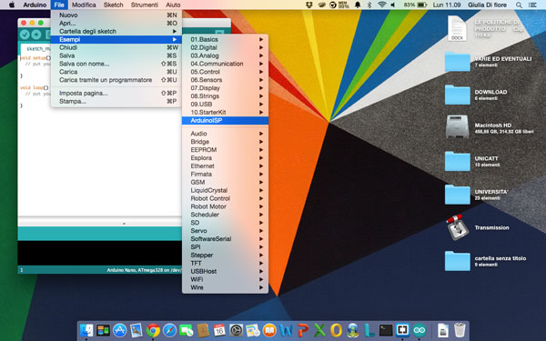
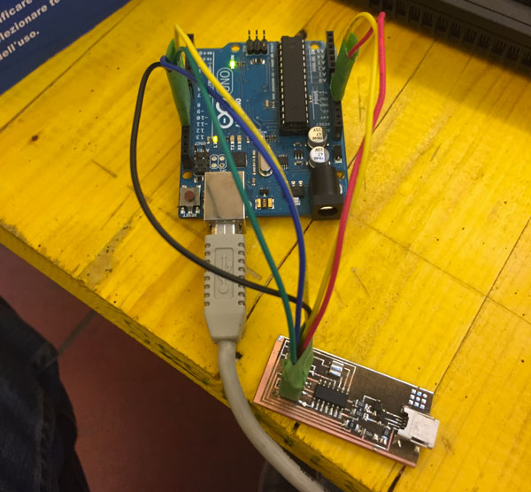
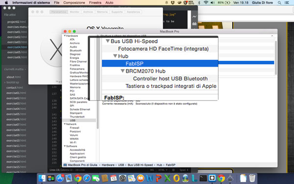

The Electronics Production assignment is to make the FabISP in-circuit programmer: you have to mill the board, stuff it with components and program it.
FabISP
Initially, here in Opendot, we want to try with different way to make the ISP and compare the results:
FabISP done with WIN PC-NC, milled with a 0,5mm tip;
FabISP done directly engraving the metal with a flexx laser from Trotec;
Unfortunately the milling machine doesn't work, and we started with the direct engraving method.
This kind of Laser Engraving Machine have 2 type of lasers:
CO2 Laser;
Fiber Laser, that can engrave matel;
Before start engraving our FabISP on the FR1, we do some test with the Speedy 400 (you can see the step of the experimental test on the week 4 page of my mate Enrico Bassi).
Electronics Production
Following the tutorial I downloaded the .png file of FabISP and then I imported in Gimp to adapt it for use with the laser cutter: the laser will remove the parts colored black, and leave only those colored white.

To optimize the timing of realization we have created, with my mates Saviero Silli and Pierluigi de Palo, a single file to be sent to print with the laser cutter.
In the file created with the 3 FabISP, besides the black layer, we have included, in the red layer, the lines for cutting the boards. After completion of the changes to the file, we did start the laser cutter.
Here you can see some videos of the laser cutter in action:
This is the result after the engraving:
Once engraved the FR1, I clean with the degreaser to remove the residues of copper powder that had remained on the surface. Below you can see the difference after cleaning:
Once ready the card, I prepared all the components to be soldered:
n. 1 ATTiny 44 microcontroller
n. 1 Capacitor 1uF
n. 2 Capacitor 10 pF
n. 2 Resistor 100 ohm
n. 1 Resistor 499 ohm
n. 1 Resistor 1K ohm
n. 1 Resistor 10K
n. 1 6 pin header
n. 1 USB connector
n. 2 jumpers (1 soldering bridge and 1 0 ohm resistor)
n. 1 Cystal 20MHz
n. 2 Zener Diode 3.3 V
n. 2 6 pin connectors
For soldering I followed the rules on the tutorial and keeping in view the layout of FabISP.
The soldering operation took about an hour, and this is the result:
To verify that everything is soldered correctly we must execute the "smoke test": plug the FabISP into your computer via the mini USB cable and if you're not receiving error messages then it means that everything is working correctly, and you can proceed to programming.
Programming
To program our ISP we need:
another ISP;
Avrdude, for programming AVR microcontrollers;
GCC, to compile C code;
the FabISP firmware, downloaded from the tutorial page;
As ISP we used an Arduino UNO, loaded from the Arduino IDE with the sketch "ArduinoISP" that allows you, in fact, to use it as an ISP.

We connected the Arduino and FabISP following the diagram below:

Signal
FabISP
ArduinoUNO
MISO
1
12
VCC
2
5V
SCK
3
13
MOSI
4
11
RESET
5
10
GND
6
GND
Once connected the two boards, you have to edit the Makefile (which is located in the firmware) to ensure that it works with our ISP: once opened, you have to look for the following two lines and you have to remove the "#" in front of the line with "usbtiny" in it and add a "#" to beginning the line with the "avrisp2" in it to comment it out.
..........
DEVICE = attiny44
#F_CPU = 12000000 # edit this line for crystal speed, in Hz
F_CPU = 20000000 # edit this line for crystal speed, in Hz
FUSE_L = 0xFF
FUSE_H = 0xDF
AVRDUDE = avrdude -c usbtiny -p $(DEVICE) # edit this line for your programmer
#AVRDUDE = avrdude -c avrisp2 -P usb -p $(DEVICE) # edit this line for your programmer
.........
After editing the Makefile, you have to open the terminal and go to the directory of the firmware:
MacBook-Pro-di-Giulia:~ Giulia$ cd Desktop/FAB\ ACADEMY/fabISP_mac.0.8.2_firmware/
MacBook-Pro-di-Giulia:fabISP_mac.0.8.2_firmware Giulia$
Next, you need to set the fuses so your board will use the external clock (crystal), usign "make fuse"
MacBook-Pro-di-Giulia:fabISP_mac.0.8.2_firmware Giulia$ sudo make fuse
avrdude -c stk500v1 -P /dev/tty.usbmodem1421 -b19200 -p attiny44 -U hfuse:w:0xDF:m -U lfuse:w:0xFF:m
avrdude: AVR device initialized and ready to accept instructions
Reading | ################################################## | 100% 0.05s
avrdude: Device signature = 0x1e9207
avrdude: reading input file "0xDF"
avrdude: writing hfuse (1 bytes):
Writing | ################################################## | 100% 0.02s
avrdude: 1 bytes of hfuse written
avrdude: verifying hfuse memory against 0xDF:
avrdude: load data hfuse data from input file 0xDF:
avrdude: input file 0xDF contains 1 bytes
avrdude: reading on-chip hfuse data:
Reading | ################################################## | 100% 0.02s
avrdude: verifying ...
avrdude: 1 bytes of hfuse verified
avrdude: reading input file "0xFF"
avrdude: writing lfuse (1 bytes):
Writing | ################################################## | 100% 0.02s
avrdude: 1 bytes of lfuse written
avrdude: verifying lfuse memory against 0xFF:
avrdude: load data lfuse data from input file 0xFF:
avrdude: input file 0xFF contains 1 bytes
avrdude: reading on-chip lfuse data:
Reading | ################################################## | 100% 0.02s
avrdude: verifying ...
avrdude: 1 bytes of lfuse verified
avrdude: safemode: Fuses OK (E:FF, H:DF, L:FF)
avrdude done. Thank you.
Finally you want to program the board to be an ISP, using "make program"
MacBook-Pro-di-Giulia:fabISP_mac.0.8.2_firmware Giulia$ sudo make program
avrdude -c stk500v1 -P /dev/tty.usbmodem1421 -b19200 -p attiny44 -U flash:w:main.hex:i
avrdude: AVR device initialized and ready to accept instructions
Reading | ################################################## | 100% 0.05s
avrdude: Device signature = 0x1e9207
avrdude: NOTE: "flash" memory has been specified, an erase cycle will be performed
To disable this feature, specify the -D option.
avrdude: erasing chip
avrdude: reading input file "main.hex"
avrdude: writing flash (1988 bytes):
Writing | ################################################## | 100% 3.41s
avrdude: 1988 bytes of flash written
avrdude: verifying flash memory against main.hex:
avrdude: load data flash data from input file main.hex:
avrdude: input file main.hex contains 1988 bytes
avrdude: reading on-chip flash data:
Reading | ################################################## | 100% 2.26s
avrdude: verifying ...
avrdude: 1988 bytes of flash verified
avrdude: safemode: Fuses OK (E:FF, H:DF, L:FF)
avrdude done. Thank you.
avrdude -c stk500v1 -P /dev/tty.usbmodem1421 -b19200 -p attiny44 -U hfuse:w:0xDF:m -U lfuse:w:0xFF:m
avrdude: AVR device initialized and ready to accept instructions
Reading | ################################################## | 100% 0.05s
avrdude: Device signature = 0x1e9207
avrdude: reading input file "0xDF"
avrdude: writing hfuse (1 bytes):
Writing | ################################################## | 100% 0.02s
avrdude: 1 bytes of hfuse written
avrdude: verifying hfuse memory against 0xDF:
avrdude: load data hfuse data from input file 0xDF:
avrdude: input file 0xDF contains 1 bytes
avrdude: reading on-chip hfuse data:
Reading | ################################################## | 100% 0.02s
avrdude: verifying ...
avrdude: 1 bytes of hfuse verified
avrdude: reading input file "0xFF"
avrdude: writing lfuse (1 bytes):
Writing | ################################################## | 100% 0.02s
avrdude: 1 bytes of lfuse written
avrdude: verifying lfuse memory against 0xFF:
avrdude: load data lfuse data from input file 0xFF:
avrdude: input file 0xFF contains 1 bytes
avrdude: reading on-chip lfuse data:
Reading | ################################################## | 100% 0.02s
avrdude: verifying ...
avrdude: 1 bytes of lfuse verified
avrdude: safemode: Fuses OK (E:FF, H:DF, L:FF)
avrdude done. Thank you.
Once finished, to verify that the FabISP has been programmed properly, just go in the System Profiler> Hardware> USB> Hubs: if all went well, FabISP" should be listed in the hub menu.

After you have programmed the board, you have to remove the 0 ohm resistor and solder bridge. Now you can use it as a programmer to program other boards.